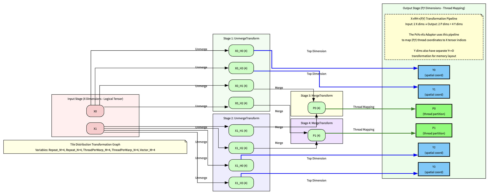

Tile Distribution Encoding: Mathematical Graph Structure
🎯 What is Tile Distribution Encoding?
Tile Distribution Encoding is a mathematical framework that describes how tensor data is distributed across parallel processing elements (threads, warps, blocks). It represents the distribution pattern as a graph structure where:
NODES: R, H₀, H₁, … Hₙ dimension sequences
EDGES: P and Y mappings that create connections
INCIDENCE MATRIX: Major/Minor indices define the edge structure
The following video visualises the tile distribution encoding in a graph format. We use this graph format to explain the relevant conepts.
🕸️ Graph Structure Concept
The encoding creates a mathematical graph that systematically maps processing elements (P) to tensor coordinates (Y). This graph structure enables efficient parallel tensor processing by establishing clear relationships between threads and data elements.
EDGES: P→RH mappings and Y→RH mappings that define connectivity
INCIDENCE MATRIX: Major/minor indices that specify exactly which nodes connect

Coordinate Transform Process
Major/Minor Indexing System
The graph connectivity uses a systematic indexing where: - 0 = R space (replication sequences) - 1 = H₀ space (first hierarchical dimension) - 2 = H₁ space (second hierarchical dimension) - n+1 = Hₙ space (nth hierarchical dimension)
Both P (processing elements) and Y (tensor coordinates) map to this RH space through major/minor index pairs that define precise graph connectivity:
🔧 Creating the Encoding
The encoding combines all graph structure information:
📊 Encoding Detail Information
The encoding automatically computes detailed mapping information:
🎯 Understanding the P→RH and Y→RH Mappings
The major/minor system creates a precise incidence matrix:
🚀 Real-World Interpretation
Understanding what the RMSNorm encoding means in practice:
🎨 Spans: Distributed Computation Patterns
Spans represent how computation is distributed spatially:
🏗️ Factory Functions
Key functions for creating encoding structures:
🎓 Key Takeaways
Graph Structure: Tile distribution encoding represents parallel computation as a graph with R/H nodes and P/Y edges
Incidence Matrix: Major/minor indices create precise mappings between processing elements and data
Hierarchical Organization: R (replication) → H (hierarchical tiles) → spans → Y (element indexing)
Efficiency: The encoding ensures optimal work distribution across parallel processing elements
Foundation: This mathematical structure enables all higher-level tile distribution operations
The tile distribution encoding serves as the mathematical foundation for all parallel tensor operations in the Composable Kernels framework!
Source Code
---title: "Tile Distribution Encoding: Mathematical Graph Structure"format: live-html---## 🎯 **What is Tile Distribution Encoding?****Tile Distribution Encoding** is a mathematical framework that describes how tensor data is distributed across parallel processing elements (threads, warps, blocks). It represents the distribution pattern as a **graph structure** where:- **NODES**: R, H₀, H₁, ... Hₙ dimension sequences - **EDGES**: P and Y mappings that create connections- **INCIDENCE MATRIX**: Major/Minor indices define the edge structureThe following video visualises the tile distribution encoding in a graph format. We use this graph format to explain the relevant conepts.{{< video https://www.youtube.com/watch?v=9ONbP5Ppsi0 >}}```{pyodide}#| echo: false#| output: false#| autorun: true# Auto-install pythonck packageimport micropipawait micropip.install("https://raw.githubusercontent.com/ghamarian/pythonck/master/documentation/pythonck-0.1.0-py3-none-any.whl")``````{pyodide}#| echo: true#| output: trueimport numpy as npfrom pytensor.tile_distribution_encoding import TileDistributionEncodingfrom pytensor.tile_distribution import make_tile_distribution_encoding# RMSNorm example - realistic GPU kernel distributionprint("🧪 RMSNorm Tile Distribution Encoding Example")print("="*50)# Define hierarchical tile structurevariables = {"Repeat_M": 4, # Outer iteration loops"WarpPerBlock_M": 2, # Warps per block"ThreadPerWarp_M": 8, # Threads per warp "Vector_M": 4, # SIMD vector width"Repeat_N": 4,"WarpPerBlock_N": 2,"ThreadPerWarp_N": 8,"Vector_N": 4}print("📋 Hierarchical Structure:")for var, val in variables.items():print(f" {var}: {val}")```## 🕸️ **Graph Structure Concept**The encoding creates a **mathematical graph** that systematically maps processing elements (P) to tensor coordinates (Y). This graph structure enables efficient parallel tensor processing by establishing clear relationships between threads and data elements.The graph consists of:- **NODES**: R sequences (replication), H₀ sequences (dimension 0), H₁ sequences (dimension 1), ... Hₙ sequences - **EDGES**: P→RH mappings and Y→RH mappings that define connectivity- **INCIDENCE MATRIX**: Major/minor indices that specify exactly which nodes connect### Major/Minor Indexing SystemThe graph connectivity uses a systematic indexing where:- **0** = R space (replication sequences)- **1** = H₀ space (first hierarchical dimension) - **2** = H₁ space (second hierarchical dimension)- **n+1** = Hₙ space (nth hierarchical dimension)Both P (processing elements) and Y (tensor coordinates) map to this RH space through major/minor index pairs that define precise graph connectivity:```{pyodide}#| echo: true#| output: true# Graph nodes: R and H dimension sequencesrs_lengths = [] # No R dimension for RMSNormhs_lengthss = [ [variables["Repeat_M"], variables["WarpPerBlock_M"], variables["ThreadPerWarp_M"], variables["Vector_M"]], # H₀: M dimension [variables["Repeat_N"], variables["WarpPerBlock_N"], variables["ThreadPerWarp_N"], variables["Vector_N"]] # H₁: N dimension ]print("🏗️ Graph Nodes (Dimension Sequences):")print(f" R sequence: {rs_lengths} (empty)")print(f" H₀ sequence (M): {hs_lengthss[0]} → total size: {np.prod(hs_lengthss[0])}")print(f" H₁ sequence (N): {hs_lengthss[1]} → total size: {np.prod(hs_lengthss[1])}")print(f" Total tensor elements: {np.prod(hs_lengthss[0]) * np.prod(hs_lengthss[1])}")``````{pyodide}#| echo: true#| output: true# Graph edges: P and Y mappings using major/minor incidence matrixprint("\n🔗 Graph Edges (Incidence Matrix):")print("The major/minor system creates precise graph connectivity:")print(" • Major index: 0=R, 1=H₀, 2=H₁, 3=H₂, ...")print(" • Minor index: position within that R or H sequence")# P dimension mappings (thread/warp positioning)ps_to_rhss_major = [[1, 2], [1, 2]] # P₀ and P₁ connect to H sequences ps_to_rhss_minor = [[1, 1], [2, 2]] # Specific H componentsprint("\n📍 P Dimension Edges (Thread/Warp Positioning):")print("P coordinates determine which processing element (thread/warp) you are:")print(f" • P₀ major=[1,2] minor=[1,1] → connects to H₀[1] and H₁[1]")print(f" → WarpPerBlock_M ({hs_lengthss[0][1]}) and WarpPerBlock_N ({hs_lengthss[1][1]})")print(f" • P₁ major=[1,2] minor=[2,2] → connects to H₀[2] and H₁[2]") print(f" → ThreadPerWarp_M ({hs_lengthss[0][2]}) and ThreadPerWarp_N ({hs_lengthss[1][2]})")# Y dimension mappings (data element indexing) ys_to_rhs_major = [1, 1, 2, 2] # Y dims connect to H sequencesys_to_rhs_minor = [0, 3, 0, 3] # Specific H componentsprint("\n📊 Y Dimension Edges (Data Element Indexing):")print("Y coordinates determine which data elements each thread processes:")print(f" • Y₀ major=1 minor=0 → connects to H₀[0] = Repeat_M ({hs_lengthss[0][0]})")print(f" • Y₁ major=1 minor=3 → connects to H₀[3] = Vector_M ({hs_lengthss[0][3]})")print(f" • Y₂ major=2 minor=0 → connects to H₁[0] = Repeat_N ({hs_lengthss[1][0]})")print(f" • Y₃ major=2 minor=3 → connects to H₁[3] = Vector_N ({hs_lengthss[1][3]})")print("\n🎯 Complete Graph Construction:")print(" 1. Create R and H node sequences with specific lengths")print(" 2. Define P→RH edges using major/minor indices") print(" 3. Define Y→RH edges using major/minor indices")print(" 4. Result: Bipartite graph mapping (P,Y) coordinates to tensor positions")```## 🔧 **Creating the Encoding**The encoding combines all graph structure information:```{pyodide}#| echo: true#| output: true# Create the complete encodingencoding = make_tile_distribution_encoding( rs_lengths=rs_lengths, hs_lengthss=hs_lengthss, ps_to_rhss_major=ps_to_rhss_major, ps_to_rhss_minor=ps_to_rhss_minor, ys_to_rhs_major=ys_to_rhs_major, ys_to_rhs_minor=ys_to_rhs_minor)print("✅ Encoding Created Successfully!")print(f" Type: {type(encoding).__name__}")print(f" Dimensions: X={encoding.ndim_x}, P={encoding.ndim_p}, Y={encoding.ndim_y}, R={encoding.ndim_r}")# Calculate effective processing elementstotal_threads = np.prod([np.prod(hs) for hs in hs_lengthss]) // np.prod(encoding.detail.ys_lengths)print(f" Total processing elements: {total_threads}")print(f" Elements per processing element: {np.prod(encoding.detail.ys_lengths)}")```## 📊 **Encoding Detail Information**The encoding automatically computes detailed mapping information:```{pyodide}#| echo: true#| output: trueprint("🔍 Detailed Encoding Information:")print(f" RH Major dimensions: {encoding.detail.ndim_rh_major}")print(f" Span Major dimensions: {encoding.detail.ndim_span_major}")print(f" RHS Minor dimensions: {encoding.detail.ndims_rhs_minor}")print(f" Y lengths: {encoding.detail.ys_lengths}")print("\n📐 Distributed Spans per X dimension:")for x_idx inrange(encoding.ndim_x): spans = encoding.detail.distributed_spans_lengthss[x_idx] active_spans = [s for s in spans if s !=-1]print(f" X{x_idx}: {active_spans}")print("\n🗺️ Y to Span Mappings:")for y_idx inrange(encoding.ndim_y): span_major = encoding.detail.ys_to_span_major[y_idx] span_minor = encoding.detail.ys_to_span_minor[y_idx]print(f" Y{y_idx} → Span[{span_major}][{span_minor}]")```## 🎯 **Understanding the P→RH and Y→RH Mappings**The major/minor system creates a precise incidence matrix:```{pyodide}#| echo: true#| output: trueprint("🎯 Understanding Major/Minor Mapping System:")print("\n📋 Major Index (RH Major):")print(" 0 = R sequence (replication)")print(" 1 = H₀ sequence (first X dimension)") print(" 2 = H₁ sequence (second X dimension)")print(" ...")print("\n📋 Minor Index (RH Minor):")print(" Index within the specific R or H sequence")print("\n🔗 Complete P Mappings:")for p_idx inrange(encoding.ndim_p): majors = ps_to_rhss_major[p_idx] minors = ps_to_rhss_minor[p_idx]print(f" P{p_idx}:")for major, minor inzip(majors, minors):if major ==0: seq_name =f"R[{minor}]" value = rs_lengths[minor] if minor <len(rs_lengths) else"N/A"else: seq_name =f"H{major-1}[{minor}]" h_idx = major -1 value = hs_lengthss[h_idx][minor] if h_idx <len(hs_lengthss) and minor <len(hs_lengthss[h_idx]) else"N/A"print(f" → {seq_name} = {value}")print("\n🔗 Complete Y Mappings:")for y_idx inrange(encoding.ndim_y): major = ys_to_rhs_major[y_idx] minor = ys_to_rhs_minor[y_idx]if major ==0: seq_name =f"R[{minor}]" value = rs_lengths[minor] if minor <len(rs_lengths) else"N/A"else: seq_name =f"H{major-1}[{minor}]" h_idx = major -1 value = hs_lengthss[h_idx][minor] if h_idx <len(hs_lengthss) and minor <len(hs_lengthss[h_idx]) else"N/A"print(f" Y{y_idx} → {seq_name} = {value}")```## 🚀 **Real-World Interpretation**Understanding what the RMSNorm encoding means in practice:```{pyodide}#| echo: true#| output: trueprint("🚀 RMSNorm Encoding Real-World Interpretation:")print("\n🧵 Thread Organization:")print(f" • {variables['WarpPerBlock_M']} × {variables['WarpPerBlock_N']} = {variables['WarpPerBlock_M'] * variables['WarpPerBlock_N']} warps per block")print(f" • {variables['ThreadPerWarp_M']} × {variables['ThreadPerWarp_N']} = {variables['ThreadPerWarp_M'] * variables['ThreadPerWarp_N']} threads per warp")print(f" • Total threads per block: {variables['WarpPerBlock_M'] * variables['WarpPerBlock_N'] * variables['ThreadPerWarp_M'] * variables['ThreadPerWarp_N']}")print("\n📦 Data Processing:")print(f" • Each thread processes {variables['Vector_M']} × {variables['Vector_N']} = {variables['Vector_M'] * variables['Vector_N']} elements via SIMD")print(f" • Outer loops: {variables['Repeat_M']} × {variables['Repeat_N']} = {variables['Repeat_M'] * variables['Repeat_N']} iterations")print(f" • Elements per thread total: {variables['Vector_M'] * variables['Vector_N'] * variables['Repeat_M'] * variables['Repeat_N']}")print("\n🎯 Coordinate Mapping:")print(" • P coordinates determine which thread you are")print(" • Y coordinates determine which data element within thread's work")print(" • Graph structure maps (P,Y) → final tensor coordinates")total_elements = np.prod(hs_lengthss[0]) * np.prod(hs_lengthss[1])total_threads = variables['WarpPerBlock_M'] * variables['WarpPerBlock_N'] * variables['ThreadPerWarp_M'] * variables['ThreadPerWarp_N']elements_per_thread = total_elements // total_threadsprint(f"\n📊 Efficiency Analysis:")print(f" • Tensor size: {np.prod(hs_lengthss[0])} × {np.prod(hs_lengthss[1])} = {total_elements:,} elements")print(f" • Active threads: {total_threads}")print(f" • Work per thread: {elements_per_thread} elements")print(f" • Parallelization efficiency: {100* total_threads * elements_per_thread / total_elements:.1f}%")```## 🎨 **Spans: Distributed Computation Patterns**Spans represent how computation is distributed spatially:```{pyodide}#| echo: true#| output: trueprint("🎨 Understanding Distributed Spans:")# Get distributed spans from encodingspans = encoding.get_distributed_spans()print(f"\nDistributed spans: {spans}")print("\n📏 Span Interpretation:")for x_idx, span inenumerate(spans):print(f" X{x_idx} span: {span.partial_lengths}")print(f" • Each processing element handles partial tiles of size: {span.partial_lengths}")print(f" • Total spatial elements: {np.prod(span.partial_lengths)}")print("\n🔍 Span vs Y Dimension Relationship:")print(" • Spans represent the spatial distribution pattern")print(" • Y dimensions index within each span")print(" • Together they define complete data access pattern")# Show how Y maps to spansprint(f"\n🗺️ Y to Span Mapping Details:")for y_idx inrange(encoding.ndim_y): span_major = encoding.detail.ys_to_span_major[y_idx] span_minor = encoding.detail.ys_to_span_minor[y_idx]if span_major >=0and span_major <len(spans): span_length = spans[span_major].partial_lengths[span_minor] if span_minor <len(spans[span_major].partial_lengths) else"N/A"print(f" Y{y_idx} → X{span_major} span component {span_minor} (length: {span_length})")else:print(f" Y{y_idx} → Invalid span mapping")```## 🏗️ **Factory Functions**Key functions for creating encoding structures:```{pyodide}#| echo: true#| output: trueprint("🏗️ Tile Distribution Encoding Factory Functions:")print("\n1️⃣ make_tile_distribution_encoding()")print(" • Creates complete encoding from graph structure")print(" • Validates all dimension mappings")print(" • Computes detailed derived information")print("\n2️⃣ TileDistributionEncoding.get_distributed_spans()")print(" • Extracts span information from encoding") print(" • Returns list of TileDistributedSpan objects")print("\n3️⃣ TileDistributionEncoding.get_uniformed_idx_y_to_h()")print(" • Maps Y indices to flattened H index space")print(" • Useful for coordinate transformations")# Demonstrate uniformed index mappinguniformed_indices = encoding.get_uniformed_idx_y_to_h()print(f"\n📊 Y to Uniformed H Index Mapping:")for y_idx, uniform_idx inenumerate(uniformed_indices):print(f" Y{y_idx} → Uniform H index {uniform_idx}")print("\n✨ The encoding provides the mathematical foundation")print(" for creating tile distributions and coordinate mappings!")```## 🎓 **Key Takeaways**1. **Graph Structure**: Tile distribution encoding represents parallel computation as a graph with R/H nodes and P/Y edges2. **Incidence Matrix**: Major/minor indices create precise mappings between processing elements and data3. **Hierarchical Organization**: R (replication) → H (hierarchical tiles) → spans → Y (element indexing)4. **Efficiency**: The encoding ensures optimal work distribution across parallel processing elements5. **Foundation**: This mathematical structure enables all higher-level tile distribution operationsThe tile distribution encoding serves as the **mathematical foundation** for all parallel tensor operations in the Composable Kernels framework!